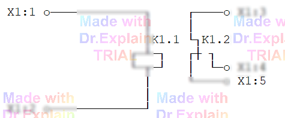

4.4 Контроль переключающих элементов ОК
Для проверки реле, оптронов и прочих переключающих элементов объекта контроля (ОК) подаются стимулирующие воздействия (напряжение/ток) и оценивается изменение состояния контактов по сопротивлению или напряжению.
Команды подачи стимула
- ВИ — управление ПИНТом: установка режима (напряжение, ток) и коммутация его выходов к измерительным шинам АСК.
- ПТ / ОТ — подключение / отключение точек ОК к/от шин коммутатора (маршрутизация стимула и измерителя).
Команды проверки состояния
Для оценки срабатывания/отпускания можно применять стандартные измерительные команды (без контроля времени срабатывания): ПР, ПЭ, ЭТ, РТ, СИ, ПИ, НЭ, КС (см. пп. 2 и 3; совмещение — п. 3.4). Дополнительно доступна команда КН для контроля напряжения на точках или шинах.
Пример: проверка реле K1
На рисунке показан узел ОК с реле K1 (НЗК и НРК):

Точки ОК: X1:1‑5. Требуется: подать с ПИНТ 24 В / 100 мА на обмотку K1 (X1:1‑2) и проверить срабатывание/отпускание нормально‑замкнутого (НЗК, X1:5) и нормально‑разомкнутого (НРК, X1:4) контактов относительно общей точки X1:3.
Фрагмент ПК
// Исходное состояние контактов
100 КС Б <10Ом *X1:3,X1:5* // НЗК замкнут
110 КС Б >100кОм *X1:3,X1:4* // НРК разомкнут
// Настройка ПИНТ (условный №3) и подключение его к шинам A2/B2
120 ВИ *3, // ПИНТ #3
24В,100мА, // параметры
+A2,-B2* // полярность на шины
// Подать стимул на обмотку реле
130 ПТ *A2:X1:1 *B2:X1:2* // X1:1 к +A2, X1:2 к -B2 (включили K1)
// Проверка после срабатывания
140 КС Б >100кОм *X1:3,X1:5* // НЗК должен разомкнуться
150 КС Б <10Ом *X1:3,X1:4* // НРК должен замкнуться
// Снять стимул
160 ОТ *A2:X1:1 *B2:X1:2*
...
10000 КЦ // конец программы
Важные замечания
- Реальные физические входы АСК задаются в конфигурационной команде РМ. В рабочих строках ПК используйте только логические обозначения точек ОК; ПОАСК сама выберет нужный БК и шину.
- Любая измерительная команда (КС, НЭ и т.д.) подключает точки к шинам только на время измерения, затем автоматически отключает. Подключения, выполненные ПТ, остаются, пока их явно не снять.
- СК — мгновенный сброс всех подключений точек ОК (глобальный «clear»). ОС = СК + сброс измерителей + отключение ПИНТа (полный reset).
- Чтобы разорвать только конкретные соединения, используйте ОТ с перечислением точек/шин.